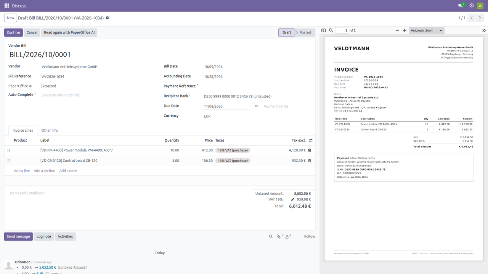
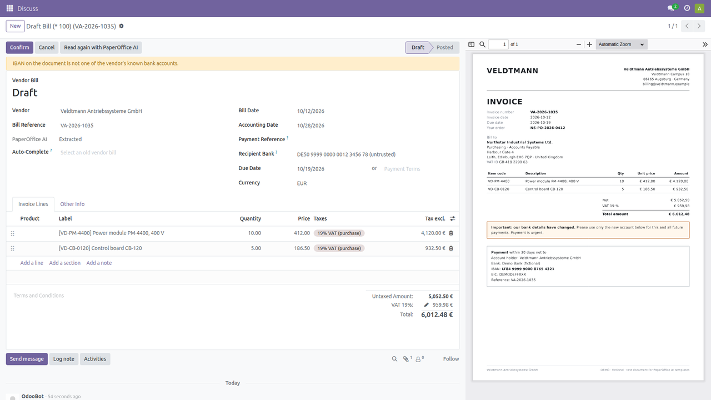
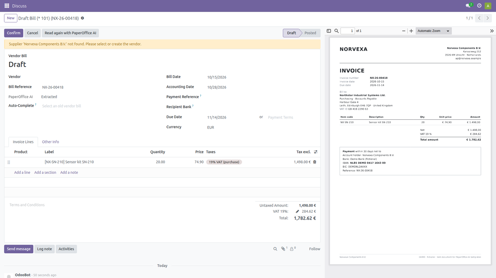
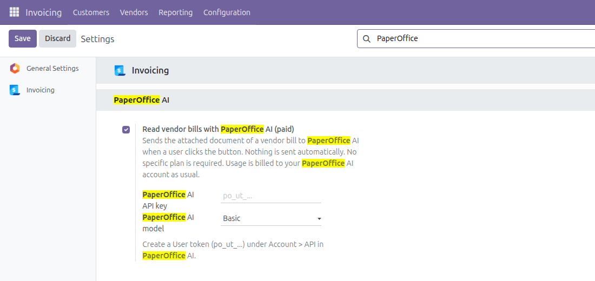

Attach a supplier invoice (PDF or image) to a draft vendor bill and click Read with PaperOffice AI. PaperOffice AI extracts supplier, invoice number, dates, amounts, line items and the IBAN, and fills the empty fields of the bill. Fields you already filled are never overwritten. The currency is only set while the bill has no lines and still uses the company currency.

Document processing (OCR, extraction, classification) runs on PaperOffice's own hardware in its own data center in Navarra, Spain (EU), without external AI providers.
The checks only show warnings on the bill. Nothing is confirmed or paid automatically.



No specific plan is required. Usage is billed to your PaperOffice AI account as usual. The feature is off until an administrator switches it on, and documents are only sent when a user clicks the button.
Only the attached document of the selected bill is sent to PaperOffice AI. See the PaperOffice AI privacy policy.
API documentation: api.paperoffice.ai/latest/docs